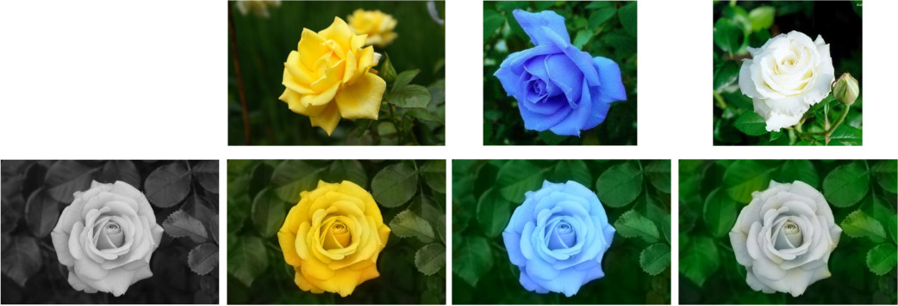

Image and Mesh Colourisation and Transfer
We have developed several effective methods for performing colourisation of both images and 3D meshes.
The figure shows how colour from the reference images on the top row are applied to the target greylevel image on the bottom row (left).

Our colourisation approach can also be applied to colour transfer:

|
|
reference image
|

|
|
reference image
|
Our colourisation approach can also be applied to coloured 3D meshes.
Here are examples of results for three typical color edit propagation tasks:
|
|
|
mesh colourisation using scribbles
|
More details are given in:
-
B. Li, Y.K. Lai, P.L. Rosin,
"Sparse graph regularized mesh color edit propagation",
IEEE Transactions on Image Processing,
vol. 29, no. 1, pp. 5408-5419, 2020.
Post-print|DOI: 10.1109/TIP.2020.2980962
-
B. Li, Y.K. Lai, M. John, P.L. Rosin,
"Automatic Example-Based Image Colorization Using Location-Aware Cross-Scale Matching",
IEEE Transactions on Image Processing, vol. 28, no. 9, pp. 4606-4619, 2019.
Post-print|DOI: 10.1109/TIP.2019.2912291
-
B. Li, F. Zhao, Z. Su, X. Liang, Y.K. Lai, P.L. Rosin,
"Example-Based Image Colorization Using Locality Consistent Sparse Representation",
IEEE Trans. Image Processing,
vol. 26, no. 11, pp. 5188-5202, 2017.
Post-print|DOI: 10.1109/TIP.2017.2732239
-
B. Li, Y.K. Lai, P.L. Rosin,
"Example-based image colorization via automatic feature selection and fusion",
Neurocomputing,
vol. 266, pp. 687-698, 2017.
Post-print|DOI: 10.1016/j.neucom.2017.05.083
return to Paul Rosin's homepage